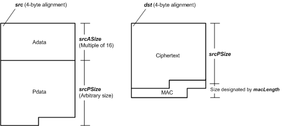

#include <twl/aes.h>
#define AES_BLOCK_SIZE 16 // 128 bit
#define AES_ADATA_BLOCK_NUM_MAX 0xFFFF
#define AES_PDATA_BLOCK_NUM_MAX 0xFFFF
#define AES_ADATA_SIZE_MAX (AES_BLOCK_SIZE * AES_ADATA_BLOCK_NUM_MAX)
#define AES_PDATA_SIZE_MAX (AES_BLOCK_SIZE * AES_PDATA_BLOCK_NUM_MAX)
AESResult AES_CcmEncryptAndSign( const AESNonce* pNonce,
const void* src,
u32 srcASize,
u32 srcPSize,
AESMacLength macLength,
void* dst,
AESCallback callback,
void* arg );
| pNonce | The nonce to use for encryption. |
|---|---|
| src | Pointer to the plaintext. Must be 4-byte aligned. In addition, it must point to a location in main memory. |
| srcASize | Size of the plaintext that will be subject to MAC operations but will not be encrypted. This must be between 0 and AES_ADATA_SIZE_MAX, inclusive, and must also be a multiple of AES_BLOCK_SIZE (=16). |
| srcPSize | Size of the plaintext that will be subject to MAC operations and encrypted. This must be between 0 and AES_PDATA_SIZE_MAX, inclusive. |
| macLength | Size of MAC. |
| dst | Pointer to the buffer that will store the ciphertext and MAC. Must be 4-byte aligned. In addition, it must point to a location in main memory. An area of byte length srcPSize + macLength is required. |
| callback | Pointer to the callback function to call when encryption completes. It is possible to specify NULL. |
| arg | User-defined parameter that is passed to the above callback function. Can be any value, including NULL. |
Returns AES_RESULT_SUCCESS if the AES operation was started successfully. Any other return values indicate an error.
Starts the AES encryption and signature process in CCM mode.
The encryption and signature will be done using the key that was set with AES_SetKey() and the nonce that was specified in pNonce. The data to sign begins at src and will be of size srcASize + srcPSize bytes. The data to encrypt begins at src + srcASize and will be of size srcPSize bytes. The encrypted result will be written to a srcPSize-byte area starting at dst, and a MAC whose size is indicated by macLength will be written just after that. When the encryption process completes, callback will be called, using the encrypted result and arg as arguments. callback is called from the interrupt handler, so note that it may be called even when interrupts are disabled. Conversely, also note that callback is not called when interrupts are disabled.
For data layout in memory, refer to the following figure.

This function returns control immediately once it has started the processing. If processing starts without a problem, this function will return AES_RESULT_SUCCESS, but if an error occurs during subsequent processing, it will call callback with the error value and arg as arguments. Note that error notification done using this callback will be started from the interrupt handler, so depending on the situation, it's possible that the callback could deliver an error notification before control returns from the function.
The encryption key must be set beforehand using AES_SetKey().
The same key and nonce must be used for encryption and decryption. The key must not be leaked, but it isn't a problem if the nonce gets leaked. However, a different value must be used for the nonce each time this function is called.
In general, the Adata size will be placed immediately after the CCM header in CCM mode, and the MAC will be calculated assuming that the Adata itself continues after the Adata size. This function, however, calculates the MAC as if the Adata is placed immediately after the CCM header. If you need the Adata size, you must include it in the Adata in advance.
2008/09/03 Added a note that the Adata size is not used when calculating the MAC.
2008/07/11 Added AES_ADATA_SIZE_MAX and PDATA_SIZE_MAX.
2007/12/25 Initial version.
CONFIDENTIAL